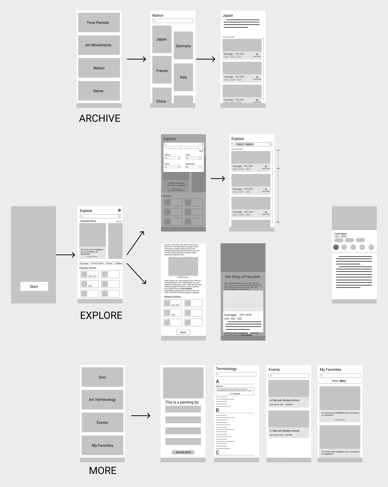
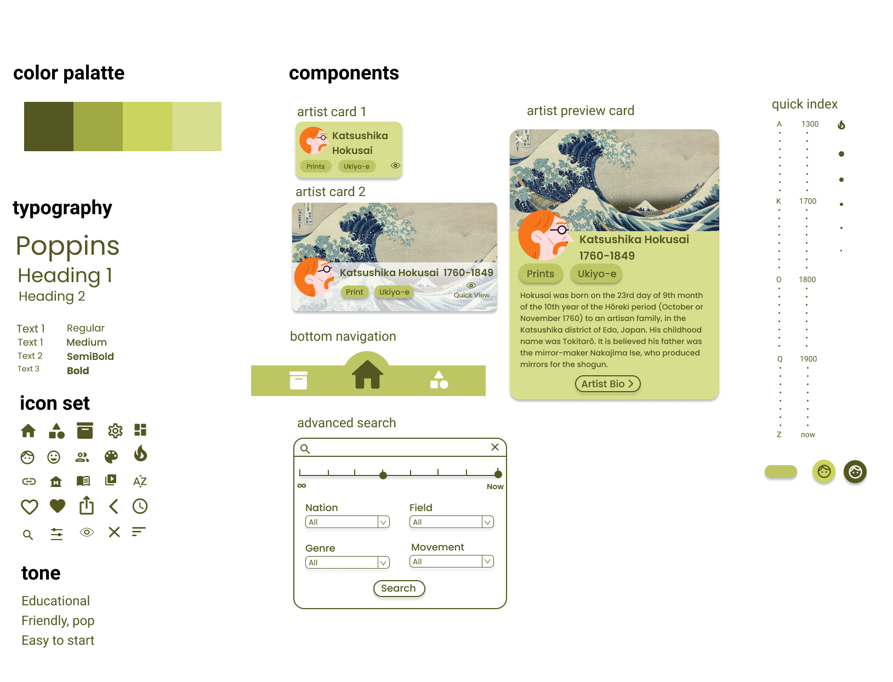

HiArtist
Brief
HiArtist is an educational app that aims to give everyone a good experience in knowing artists throughout history, even if they do not have any art learning before.
Category
User Experience
Individual Project
Role
Competitive Analysis, User Flow, Wireframes, UI Design, Prototype, User Testing
Tool
Figma
Problem
"Art washes away from the soul the dust of everyday life." We are born with the love for art. However, throughout history, some art forms have become distant from daily life that they become the paintings hang in the museums or an emblem for the rich and influential. Therefore, art has become somehow exlusive in public opinion. Even with the convenient tool of Internet, one who wants to know more about art may end up disappointed because he or she is intimidated by the pages filled with long essays and art jargons when browsing art websites or apps.
Project Objective
HiArtist is an app that aims to bring users with different educational background a easy-to-start experience in learning art by building a relaxing and vibrant relationship between the users and the artists throughout history.
Competitive Analysis
Websites
- Moma
- David Zwiner
- Google Arts and Culture
- WikiArt
- The Art Story
Mobile Apps
- History of Art
- The Art Story
- Artly
Insights from Markets
-
Too Limited
App Experience
- Most of them are basically an off-line archive of old paintings
- Almost no description of the arworks and artists
- No interactions with users
-
Too Overwhelming
Web Experience
- Abundant and useful information about the artist, but all thrown to users at once
- Long readings filled with art jargons and terminologies
- Artist introduction becomes too long that it is hard for users to navigate

Solution
To create an informative & interesting artist bio application that gives a relaxing reading experience.
User Flow
Wireframes
Style Guide
App Deliverable
- Featured Story
- Recommended Artists
- Advanced Search
Explore
- 5 Information Sections:
- biography
- artworks
- related artists
- fun fact
- more resources
Artist Bio Page
- Artists Archived into different subcategories:
- Time Period
- Art Movement
- Nation
- Genre
Archive
- Quiz
- Art Terminology
- Events
- My Favorites
More
Link to Figama Prototype
User Testing
User Feedback
- Easy to navigate
- Overall design looks great
- functions in the MORE sections are useful
- "Would intrigue me to read!"
- Some icons do not directly indicate what the content is about
- more interactions on the story page would be great
- maybe put the events in the Explore page
Observation
- Sorting icon in the search result took seconds to notice
- The embedded links were hard to notice and never clicked
- The users never used the artist preview button
Possible Improvement
- More interactions in different pages
- Add clear text description besides icons for each section in the artist bio & bottom navigation
- Add upcoming events to the home page (develop it as one of the main features)
- Increase icon size
- More clear indication for clickable elements
Iteration
- Added upcoming events section to the explore page
- Added text title of recommended artists section in the explore page
- Added text for bottom navigation icons
- Added text title for each sub-section of artist bio page
- Increased the contrast between the clickable words and remaining text in the article page
Web Version Template
Reflection
This is my first UX individual project to work on each step of the design from research to usability testing. For this app, one of the major focus is to design information display in a way that makes reading much easier for art learners. Along the process, I have realized how each detail and minute adjustment are crucial in the final result of the app. Also, user test should be continuously conducted so that designers could respond to the feedback rapidly and avoid going too far in the wrong direction with their assumptions. To conclude, I am happy to see that the result of the project after weeks of efforts is actually solving some of the problems that had been brought up at the research stage, and I have also gained a lot of valuable experiences along the process. Moreover, I am still sometimes doing brainstorming and making changes to the design to see how the idea could be pushed and expanded further to make the app truly impactful.